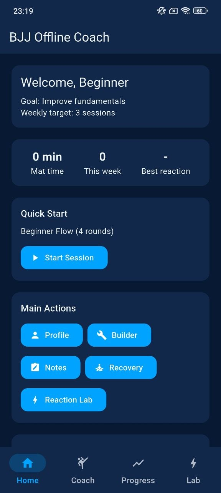
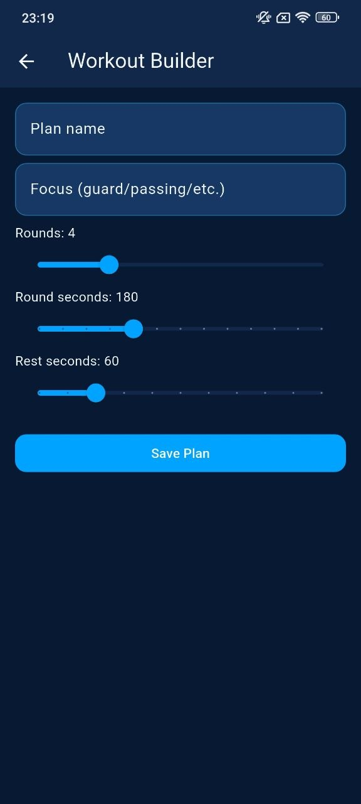
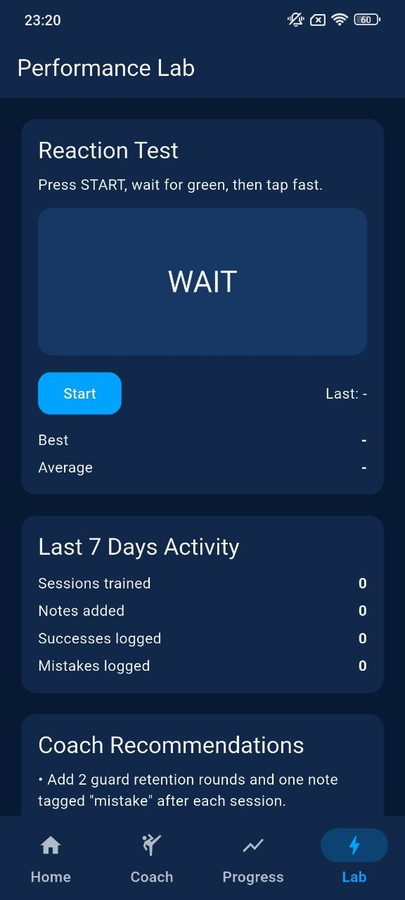
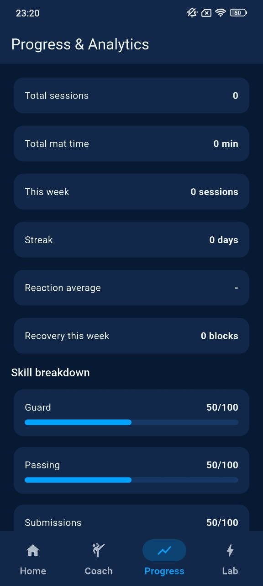
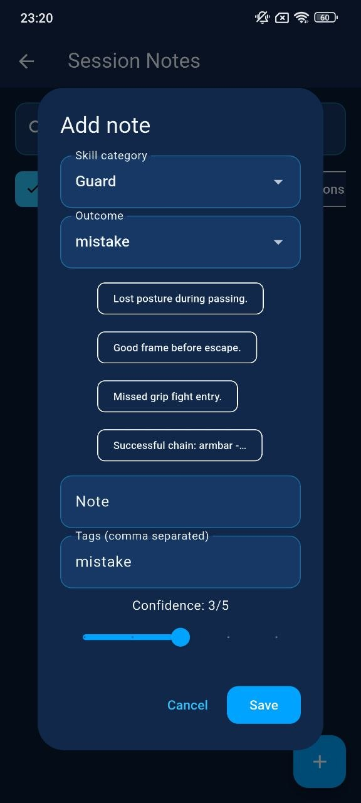

Coach Sessions
Start beginner, intermediate, or advanced flows with clear round timing and session focus.
BJJ Offline Coach helps you build structured sessions, track mat time, log mistakes, follow recovery blocks, and improve reaction speed with a focused mobile training experience.

Everything is built around practical mat work: quick plans, clean notes, measurable progress, and recovery after sessions.
Start beginner, intermediate, or advanced flows with clear round timing and session focus.
Create custom plans with rounds, rest seconds, focus areas, and training structure.
Use reaction testing and weekly activity feedback to keep your training sharp.
Follow calm breathing presets, check in after practice, and build better recovery habits.
Log mistakes, successes, confidence, tags, and skill categories after training.
Track total sessions, mat time, streaks, skill breakdown, and weekly consistency.
The interface keeps everything readable and direct. Large buttons, simple flows, and deep blue cards help you focus on training instead of searching through menus.




BJJ Offline Coach avoids unnecessary complexity. You get a direct path from plan, to session, to note, to recovery.
Weekly targets and activity tracking help training feel measurable.
Notes help turn mistakes and successful chains into future training points.
Breathing presets make post-session cooldowns easier to follow.
Start with guard basics, pressure passing, submission chains, or your own custom plan.
Use clear round and rest timing to keep practice structured and repeatable.
Add notes for mistakes, success moments, confidence, and tags after the session.
Use recovery blocks and progress analytics to keep your body and training data aligned.
The app gives beginners and active athletes a practical way to structure BJJ work, measure effort, and stay consistent.
“Clean layout, no distractions, and the session flow makes planning practice much easier.”
Beginner grappler“The notes and confidence tracking are exactly what I need after sparring rounds.”
BJJ student“Simple enough to use at the gym, but detailed enough to keep weekly progress visible.”
Active traineeDownload the app and bring structure, notes, analytics, recovery, and reaction training into your BJJ routine.